| 3 | 2 | 1 |
|---|---|---|
| 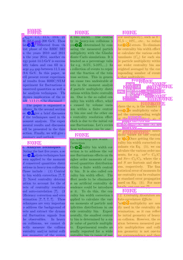 | 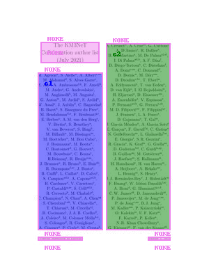 | 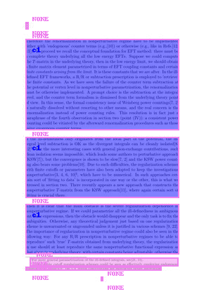 |
Für Natural Language Processing ist Preprocessing sehr entscheidend, analog zu Elephant in the Room
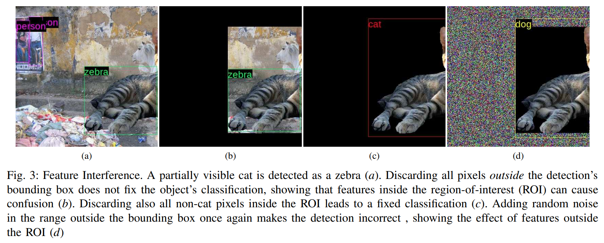 (https://arxiv.org/pdf/1808.03305.pdf)
Seitenzahlen, Bildunterschriften Fußnoten, Überschriften, Randnotizen, Tabellen, Bibliographie stört und zerstört den Textfluss.
Portable Document Format (PDF) == Grab für den Text
Kein Layout/Processing (Apache Tika, PDF-Miner)
Heuristik K2pdfopt
Machine learning - Clustering KMeans, HDBSCAN auf die Textboxen Lifen
Deep-Learning und LayoutLMv2 LayoutLMv2-FUNSD Woher das Datenset?
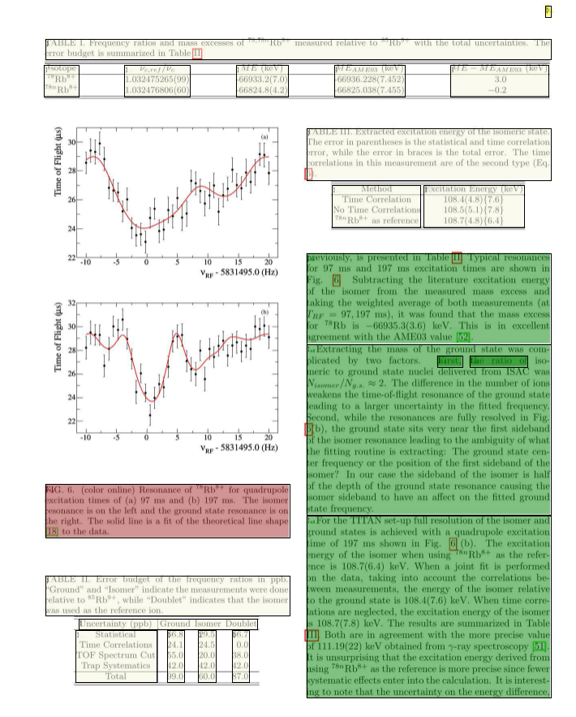
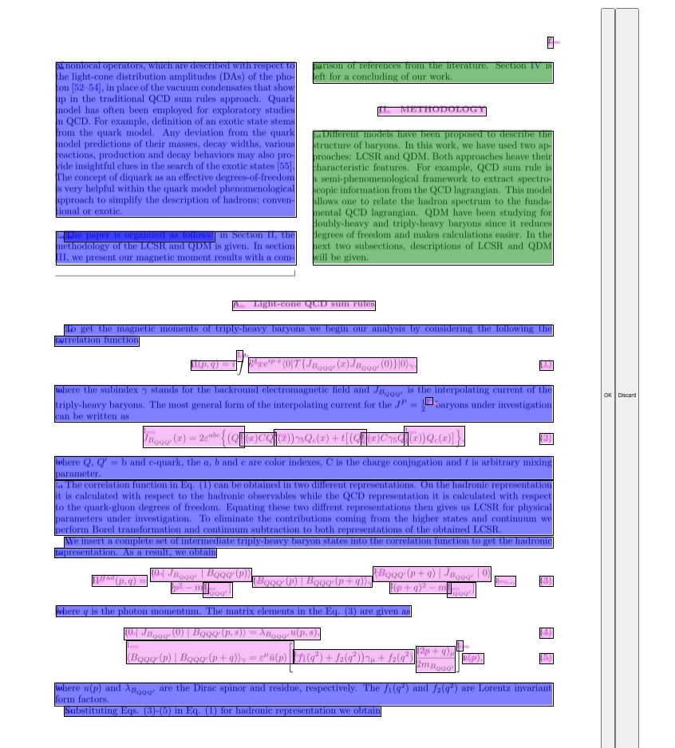
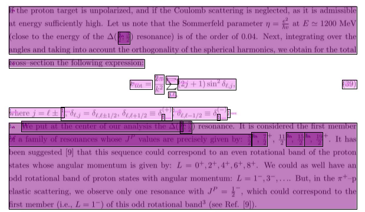
Wenn selbstständig: Mathematik innerhalb von Fußnoten?
Bild - Bild = Tabelle = Gleichung ?
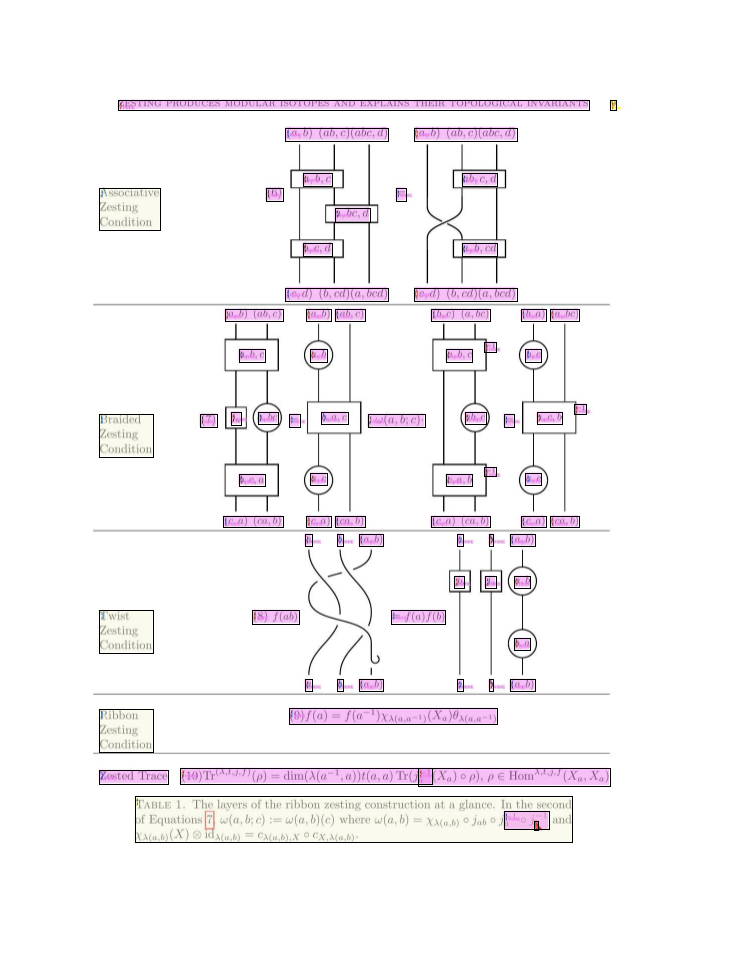
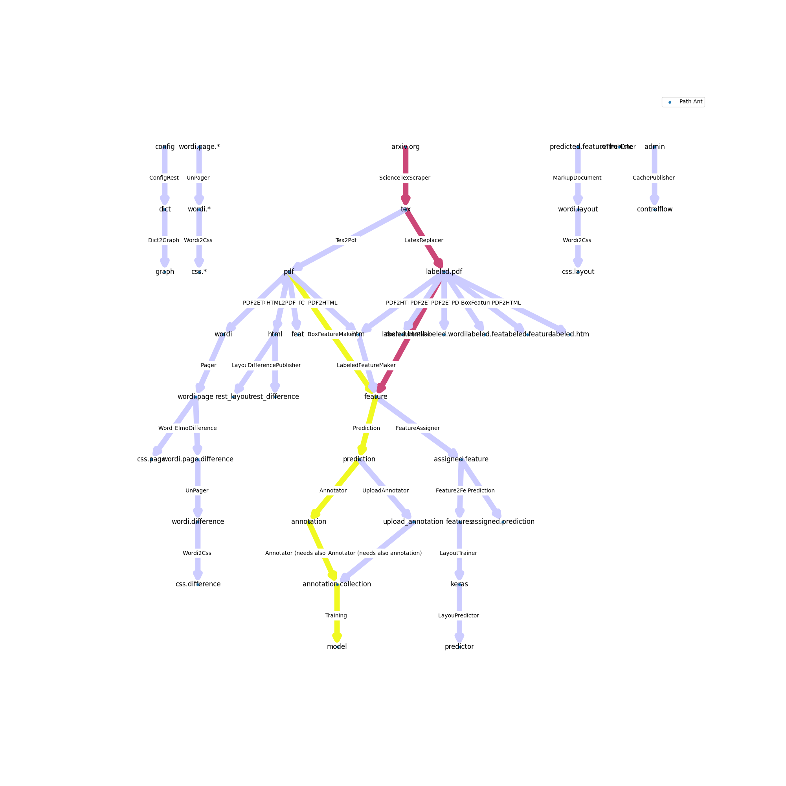
→ Pipeline-Architektur zum Anschließen diverser nlp-Anwendungen
| Quelle | ... | PREPROCESSING | (NLP-Anwendungen) |
|---|---|---|---|
| .tex → | .pdf → | .annotation → | .nlp |
| Papers/(arxiv.org) | Boxlayout/Text/Bild | Trainingsdaten | Anwendung |
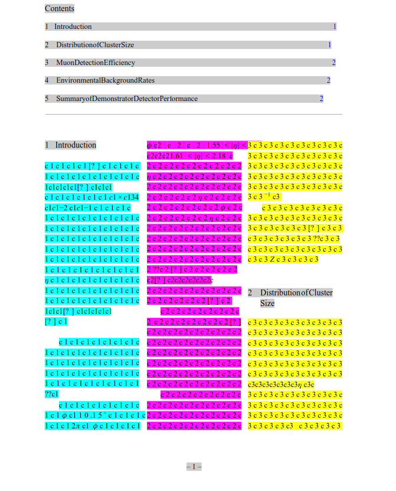
Allen Text entfernen und gegen Labels austauschen, um zu wissen, wo die Spalten sind?
(In Latex Befehle definieren, um die aktuelle Spalte zu erfragen. Welche Mühe!)
Erklärungen:
Transformer Modelle werden über unsupervised learning vortrainiert -- kein Datenset nötig und dann durch supervised learning für spezifische Aufgaben einsetzbar
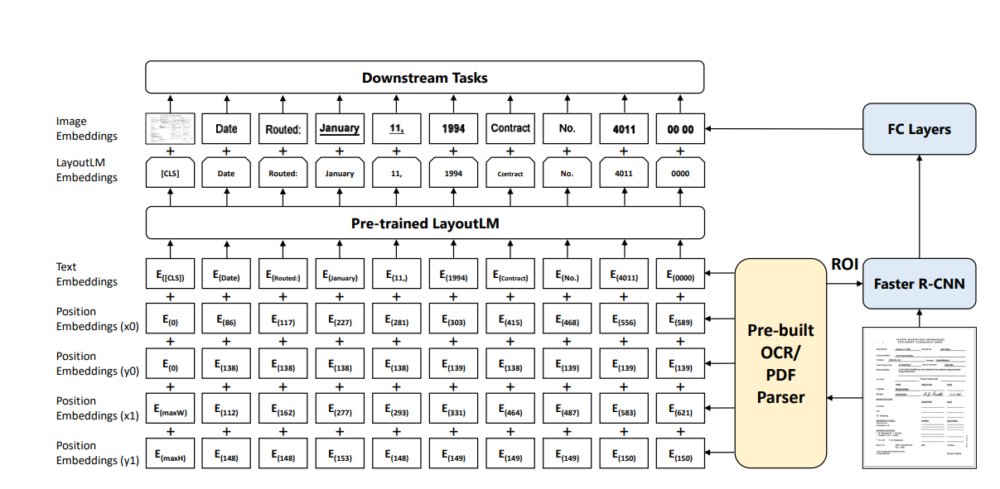
Das Transformer-Model lernt die Zusammenhänge zwischen den Embedding-Modalitäten durch folgende Aufgaben während des Pretraining
"soll" = Training
| Embeddings | Daten | Konkret |
|---|---|---|
| Text-Embeddings | Text in jeder Textbox | 4 Worte pro Textbox, estrahiert mit https://pypi.org/project/pdfminer.six/ |
| Position-Embeddings | Liste mit den Textboxen, auf 1000*1000 skaliert | Textboxen von pdfminer.six |
| Bild-Embeddings | 255 * 255 Pixel Bild | extrem scaliertes Thumbnail jeder PDF-Seite |
Wie bringt man ein Annotationsprojekt zum Laufen und erstellt ein eigenes Datenset, wenn man keines hat? Human-In-The-Loop!
Datenset:
Starter-Datenset mit richtiger Struktur
Human-in-the-loop:
WHILE TRUE:
Mensch korrigiert Predictions durch einfaches Interface
die annotierten Samples werden dem Datenset hinzugefügt. Nach einer gewissen Menge wird
das Model wieder trainiert und
der Mensch hat bei der Korrektur weniger zu tun
Labels für die Textboxen:
Textextraktion:
Schickt mir Eure besten (wissenschaftlichen) PDFs!
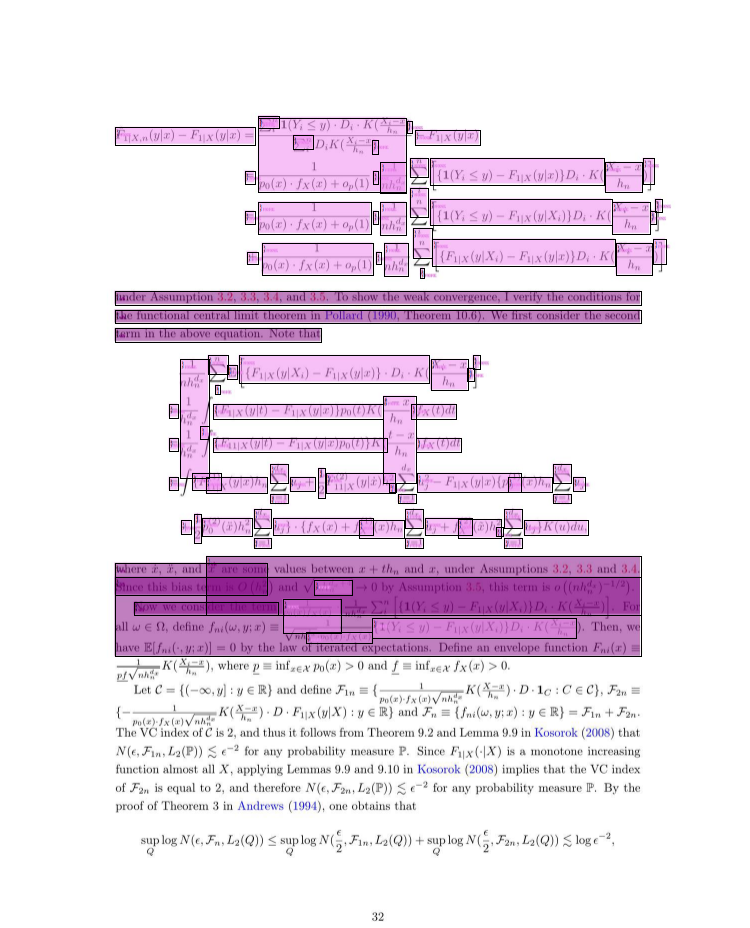
Begrenzter Raum für Text-Feature. Brauchbarstes Model nutzt nur 4 Worte pro Textbox
Fehler im datasets-package - man muss es forken und den Fehler bypassen, solange es nicht gefixt/verstanden ist
pdf-miner.six produziert Textboxen in Textboxen bei Mathematik. Wie wieder in den Text einfügen? --> Betrifft nur Mathematik, daher egal
Formulare scannen: Ersatz für Teleform (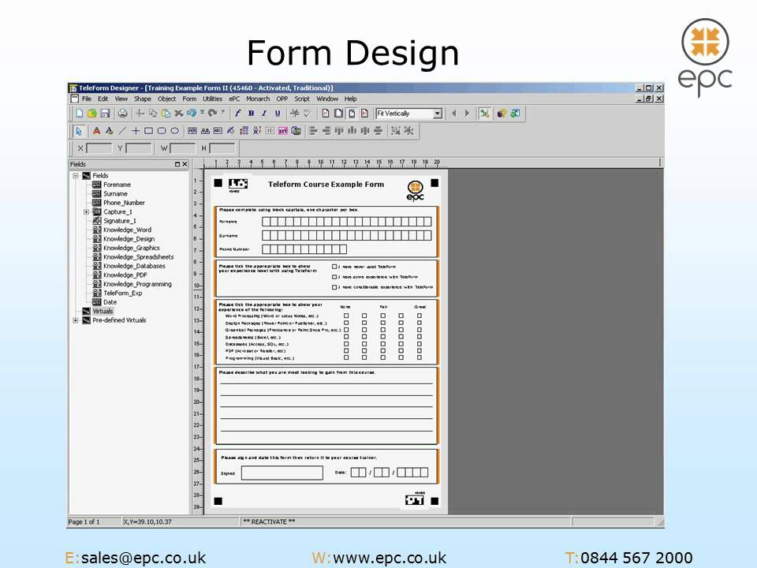)?
Tabellen analysieren?
... (viele langweilige Fälle)